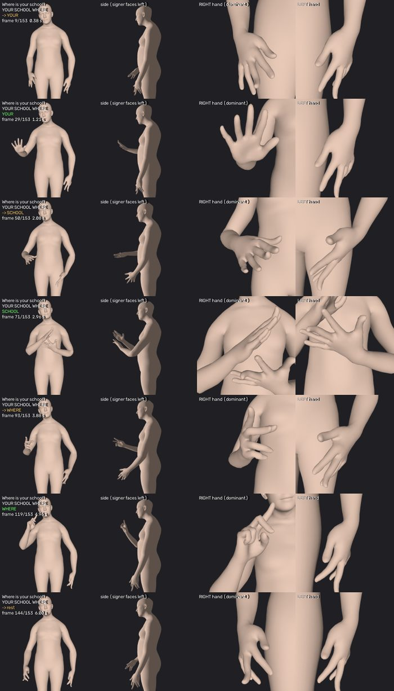
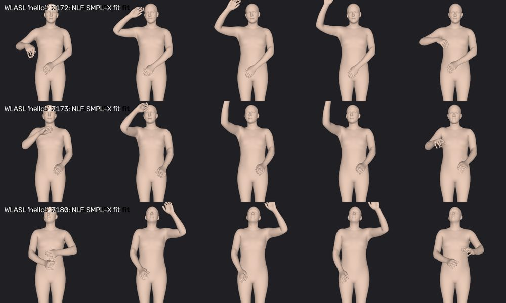
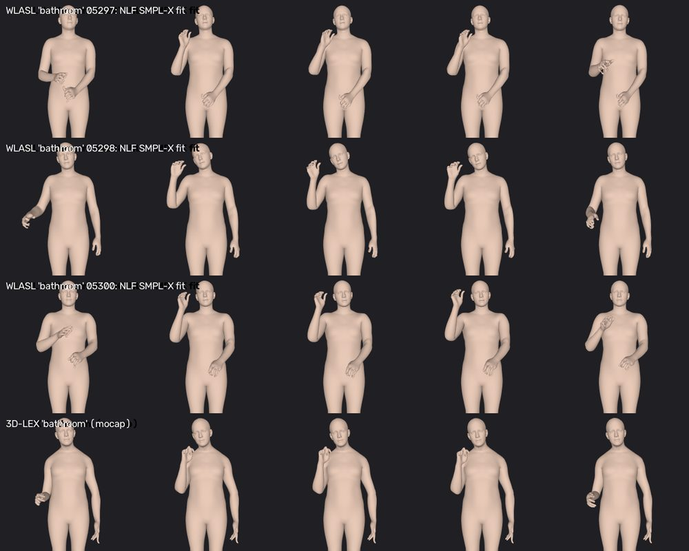

Text-to-sign models (SignSparK, MaDiS) do not produce recognisable ASL from text. This page describes the alternative: build every sentence from real recorded ASL signs. It covers how it works, what we took from where, what is already built, what we still need to add, and why.
Example: "Where is your school?" → YOUR SCHOOL WHERE → three real signs from the dictionary → one continuous motion → robot.
The two highlighted boxes are the new parts. Everything else already exists in the project.

Our replication showed that SignSparK's text-only output contains no recognisable signs, and MaDiS's only a faint trace (see the separate SignSparK and MaDiS report). Both papers' benchmarks reward standing still, so their good numbers do not mean correct signs.
SignSparK's authors released a dictionary pipeline for Chinese (CSL-Daily) and German (PHOENIX) sign language. We ran it and scored the output with their back-translation model, which reads the motion and writes the sentence it thinks was signed (higher is better):
How well a sign-reading model recovers the sentence. 200 test sentences.
Scale 0–20; standing still scores 1.0. CSL-Daily shows the same: stitched 7.7, real 6.2. Caveat: the dictionary comes from the same training data the reading model learned from, so the stitched score is somewhat flattered. The signs themselves are the right ones.
We tested whether SignSparK's motion model joins dictionary signs better than plain interpolation (SLERP). It does not: on stitched signs it ties or does slightly worse (PHOENIX: 39.5 vs 40.9 on chrF, p = 0.018), and it needs a 1.4-billion-parameter model per stream. Interpolation is instant and needs no GPU.
| Part | Taken from | Why this choice | Status |
|---|---|---|---|
| Speech → text | faster-whisper (ver-01/stt_test.py) | Accurate, runs locally, already tested on our audio | works |
| Text → sign list | An LLM (new); the step mirrors the text-to-gloss stage of SignSparK's dictionary pipeline | No English → ASL gloss model exists. An LLM can follow ASL word order and is told to use only signs the dictionary has | to add |
| Main sign source | WLASL videos (2,000 ASL signs, ~10 signers each) | Largest public word-level ASL set; several signers per sign let us pick the most typical one | prototype: 23 signs |
| Video → 3D body | NLF, the body tool SignSparK's authors used | Same tool and SMPL-X format as SignSparK's training data, so everything downstream reads it unchanged | works (CPU) |
| Video → 3D hands | WiLoR, the hand tool SignSparK's authors used | NLF's handshapes are approximate; WiLoR is built for hands | needs MANO file |
| Cut each video to the sign | FAST segmenter, released with SignSparK | Removes the rest pose before and after each sign, so joins are clean | needs WiLoR |
| Reference signs | 3D-LEX motion capture (ver_03_sr_t2p) | Best handshapes (real mocap). Used to check WLASL fits and as the preferred version where available | 735 signs converted |
| Joining signs | Eased interpolation (ver_03_sr_t2p, joined mode) | As good as SignSparK for this job (section 2); fixed earlier problems at the joins | works |
| Motion → robot | ver_02 pipeline | Retargeting, collision fix and MuJoCo safety gate are finished and accept this format | works |
| Quality check | Our WLASL sign recogniser (this replication) | Measures whether a produced sign is recognisable, which joint-error metrics cannot do | works, 124 signs |
What we did not keep: the SignSparK and MaDiS generators. From SignSparK we keep its data recipe (NLF, WiLoR, FAST, SMPL-X format), not its motion model.
23 signs taken from our robot demo sentences (hello, thank you, name, bathroom, where, school, ...), 3 WLASL videos each, all 69 fetched and converted to SMPL-X with NLF on the CPU.


| Check | Result | Chance |
|---|---|---|
| A WLASL clip is matched to the right 3D-LEX sign, picking among the 14 prototype signs | 50% (top-5: 90%) | 7% |
| Same, picking among all 735 3D-LEX signs | 7.1% (top-5: 23.8%) | 0.1% |
| Same with the older SignAvatars fits of WLASL, for comparison | 5.3% (top-5: 13.2%) | 0.1% |
| A clip's nearest other clip is the same sign by another signer | 41% | 2.9% |
Our conversion already agrees with motion capture better than the older published fits, before the hand tool is added. It also fills a real gap: 9 of our 23 demo signs (hello, me, good, need, nice, learn, language, thank you, name) are broken files in 3D-LEX, and WLASL has all of them.
Handshapes decide which sign it is (A vs S vs T). NLF gives only loose curls. Needs the free MANO model file (license-gated, you download it) and a 2.57 GB checkpoint.
WLASL videos start and end with the hands down. Cutting each clip to the sign itself makes sentences faster and the joins cleaner. FAST is the segmenter SignSparK's data was built with; it reads WiLoR output.
Some WLASL signers sign with the left hand (for example one HELLO clip). Every sign is flipped to right-dominant so a sentence never switches hands.
With ~10 versions of each sign, we choose the one closest to all the others. That rejects clips with tracking errors or regional variants, as SignSparK's own dictionary pipeline does.
The LLM writes the sentence in ASL order using only signs we have, and rephrases unknown words into known signs (PURCHASE → BUY). No trained English → ASL gloss model exists, and rephrasing is what human interpreters do.
Names and words with no sign are spelled letter by letter with the 26 handshapes of the ASL alphabet. It keeps any sentence possible; we still need a source for the letter handshapes.
Run the sign recogniser on each dictionary entry and on stitched sentences, and have a signer review a sample. This catches wrong or badly captured signs before they reach the robot.
One command: speech in, robot motion out, through the existing ver_02 fast pipeline.
About 2,700 signs from 52 Deaf signers (Microsoft). It adds more signs and more consistent recordings than WLASL. You must accept its research license yourself.
| Item | Why | Who |
|---|---|---|
MANO_RIGHT.pkl | Free download after registering at mano.is.tue.mpg.de; WiLoR cannot run without it | You |
| OK to download WiLoR (2.57 GB) | The hand-capture model | You |
| ASL Citizen license (optional) | Larger, cleaner sign source | You |
| GPU time | Extraction of ~20,000 WLASL clips is slow on CPU; the GPU is busy with the MaDiS retrain until about 29–30 Oct | After MaDiS |